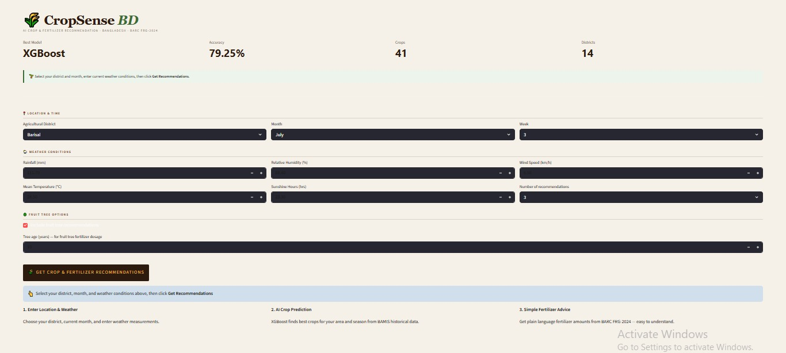
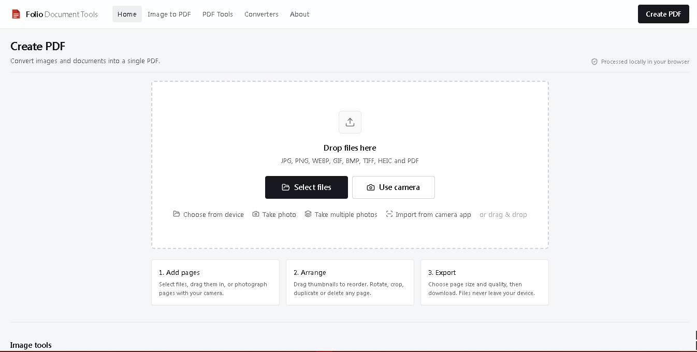
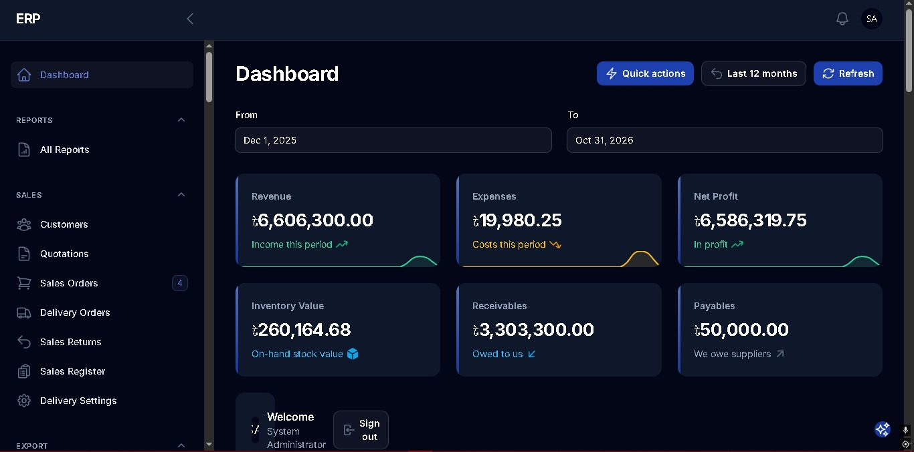
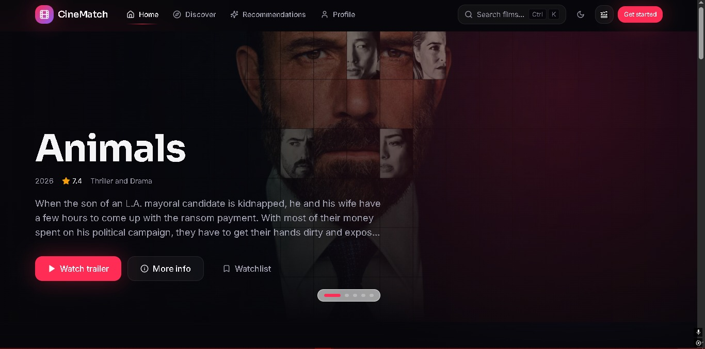

Projects

Smart Crop Recommendation System
Project Description: A machine learning project that recommends suitable crops based on agricultural data.
Tech Stack: Python, Scikit-learn, Streamlit

Folio – Document Tools
Project Description: Developed a browser-based document utility that converts images into PDFs, supports camera
scanning, and enables page reordering, cropping, editing, and compression.
Tech Stack: Next.js 16, React 19, TypeScript, Tailwind CSS, pdf.js, pdf-lib, Web Workers.

Textile Manufacturing ERP System
Project Description: Developed an ERP software system for textile manufacturing businesses to manage inventory,
production, sales, purchases, accounts, and employee permissions.
Tech Stack: Laravel, PHP, Filament, PostgreSQL

Cinematch
Project Description: Built a content-based movie recommendation system from scratch using TF-IDF and cosine
similarity to recommend similar movies and search films using natural-language queries.
Tech Stack: Python, TF-IDF, Cosine Similarity, Python Standard Library (Regex, collections.Counter, math.log)
Copyright Shafayat Jamil 2026